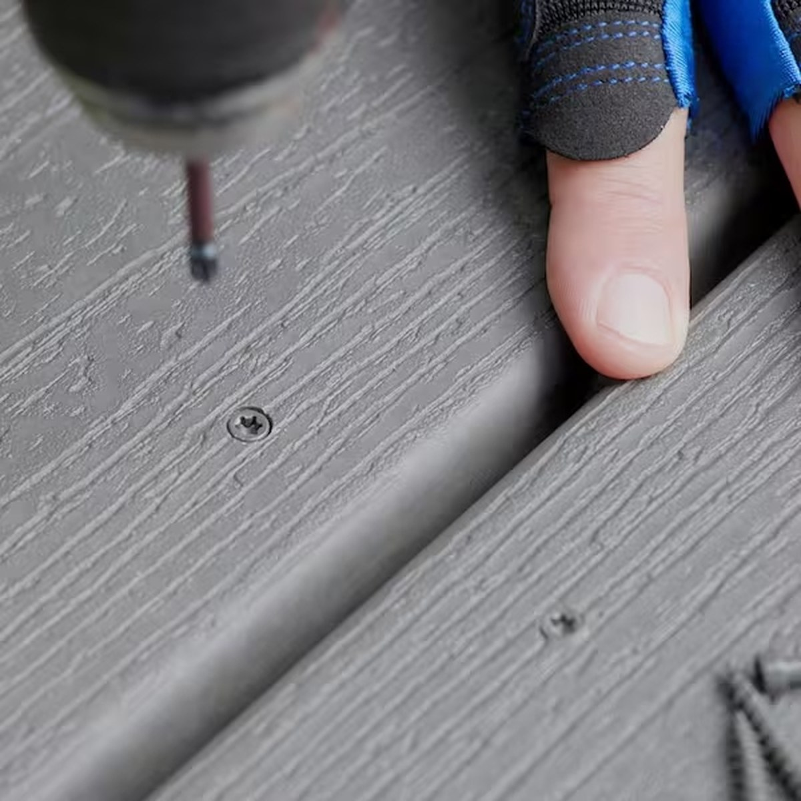
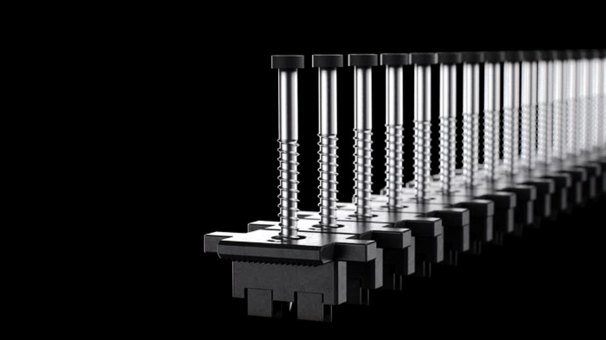
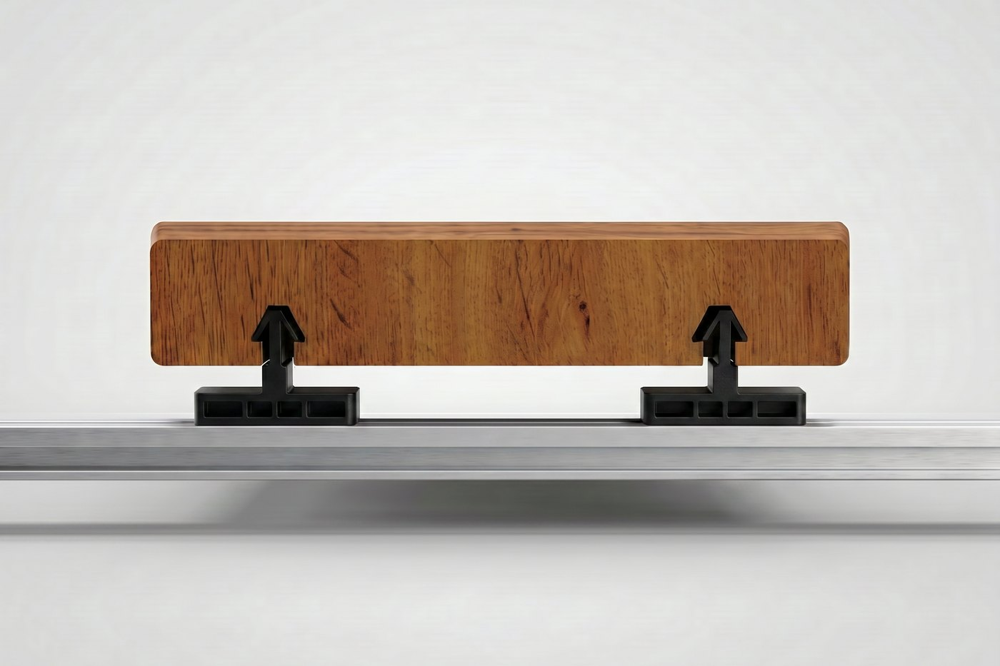
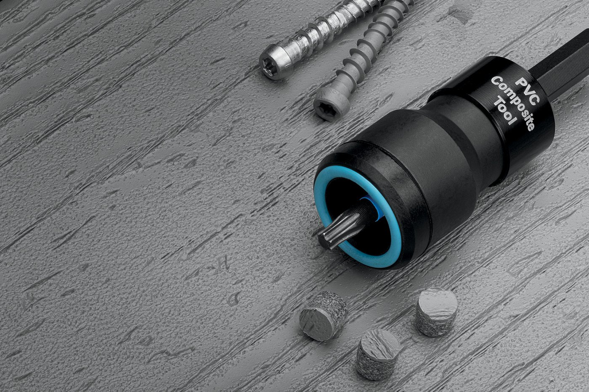

Every deck gets fastened one of two ways. Either the screws go down through the face of the board, or the hardware goes underneath it in a groove. That is the whole decision, and it is usually made in about ten seconds on a job site. It deserves longer than that, because it is the one choice that touches how the deck looks, how it drains, how it moves, how long it takes to build, and how you fix it in year eight.
Here is the honest comparison. Not a sales page, a spec discussion. Where face screwing wins, it wins, and we will say so.
Start with the arithmetic
Face screwing is not two screws. It is two screws per board, per joist, for every board on the deck. Run 5.5 inch boards over a frame at 16 inches on center and that works out to roughly three fasteners in every square foot of finished deck. A 400 square foot deck carries well over a thousand visible screw heads. Each one is a hole drilled through the wear surface of the board, and each one has to be driven to the right depth, in line with its neighbor, without mushrooming the material around it.
Appearance is the obvious one, and it is not the important one
A grid of screw heads is the first thing anyone notices, and on a premium wood-grain board it is the thing that gives away the price of the deck. Our boards are built to look like lumber, with a five-layer RENOLIT PMMA film over a proprietary ASA capstock, and a thousand stainless dots read straight through that work. If you want to see how much detail is in the surface, the board construction breakdown covers what is actually under your feet.
But appearance is the argument everyone already knows. The reasons that matter show up later.
A bare screw head is a hole in the wear surface
A countersunk screw head sits in a shallow dish. That dish collects water, pollen, and dirt, and it holds them against the one place where the protective cap layer of the board has been cut through. On wood decking that is where rot starts. On a capped board it is where staining and discoloration start, because you have opened a path past the cap into the core.

Then there is the fastener itself. Stainless is the right call and most installers use it, but a galvanized or coated deck screw in a wet coastal environment will eventually bleed a rust ring into the board around it. The screw is fine structurally. The deck looks tired anyway.
Read that section carefully though, because every word of it describes an open screw head. The dish is the problem, not the screw. Close the dish and most of it goes away, which is exactly what the third method below does.
PVC boards move, and a rigid screw fights that
This is the part that gets skipped. Cellular PVC expands and contracts with temperature along its length. A 16 foot board on a dark deck in full August sun is measurably longer than the same board in February. A face screw pins the board to the joist at a fixed point, so the board has to relieve that movement somewhere else: at the ends, at the butt joints, or around the screw hole itself. Over enough cycles that shows up as slight mushrooming around heads, screws that back out a hair above the surface, or the faint oil-canning between fasteners you see on a long run.
A clip in a groove works differently. The clip holds the board down against uplift and holds the gap consistent, while the groove allows the board to move along its length inside the cradle. The board is restrained where it needs to be and free where it needs to be. That is the actual engineering reason hidden fasteners suit PVC and capped boards, and it has nothing to do with looks.
Face screwing decides where the board is allowed to be. A clip decides how the board is allowed to move.
Three ways to fasten a board, not two
One thing worth clearing up before the labor argument, because this gets flattened into a two-way choice constantly. There are three methods in real use, and all three of them can hand you a deck with no exposed screw head on it. Where they differ is in how many times somebody has to stop and drive something, and in which board each one belongs on.
Individual clips in the groove
The traditional approach is a single clip that seats in the groove between two boards and takes its own screw down into the joist. Starborn’s Clip&Rip is the sharpened version of that idea. The clips ship pre-loaded with stainless screws and collated into strips, so instead of fishing loose clips and loose screws out of a bucket you insert the strip into the leading board groove, center it over the joist, drive the screw until the head is flush with the clip, then lift the strip to break the installed clip free and keep moving. Compression tabs on the underside bite into the joist so the clip stays level. The clip sets its own 3/16 inch gap, it works with grooved PVC, composite, and hardwood boards, and it comes in 305 or 316 stainless depending on how close the deck is to salt water.

That is a real improvement over loose clips. One pass instead of three, no hardware dropped between the joists, and gapping that does not depend on whoever is holding the spacer. What it does not change is the count. You are still placing and driving one fastener at every single point where a board crosses a joist.
Clips already set on a rail
InvisiClip™, powered by the GRAD® system, moves the clip off the board and onto the structure. The clips arrive already snapped into an aluminum rail at the correct spacing, and the rail is the thing that gets fastened to the joist. You stop fastening at every board-and-joist intersection and start fastening the rail instead, then drop boards onto clips that are already sitting exactly where they belong. Alignment and gap spacing are settled before the first board goes down, by the rail, not by the installer.

There is a second consequence that has nothing to do with speed. Because each board rides on the clips, it never makes contact with the rail or the joist below. Water is not trapped between two flat surfaces, air moves under the board, and the framing stays drier than it does under a board screwed flat to the top of a joist.
Face screwed, then plugged
Here is the one that gets left out of this argument constantly. Fasten through the face of the board, then close the hole back up with a plug cut from the same board. Starborn markets the Pro Plug® System as a hidden fastener, and on the right board that is a fair description rather than marketing.
The sequence is short. A stepped bit pre-drills and counterbores in one pass. The screw is a Type 17 auger tip in star drive, available epoxy coated or in 305 or 316 stainless, and it is driven through the PVC and composite setting tool. That tool carries an Auto-Stop™ mechanism that seats the head at exactly the right depth and makes an audible pop when it gets there, plus a free-spinning stop collar that keeps the board surface unmarked. It runs on a standard drill at high speed, not an impact driver. Then the plug taps in and gets sanded flush.
The plug is the whole reason it works. Starborn cuts them from actual board material rather than molding a lookalike, and American Pro sits on their published brand list alongside the national names. The plug going into your deck is the same product as the deck.

Which board you are running decides whether this is the right call, and the answer is not the same across our line. Legacy PVC is solid color all the way through, so a plug blends into the surface and weathers along with it instead of standing out in year three. That makes the Pro Plug System the matched method for Legacy Solid Edge boards, and the right answer on any board that has to be fastened from the top no matter which system built the field: stair treads, picture-frame borders, the board against the house, the last closure course. TrueGrain Deck™ is a different situation. Its surface is a laminated wood-grain film with grain that runs the length of the board, so a round plug cannot line up with it. There we keep the field on clips and leave that surface uninterrupted.
Install time swings the other way than people expect
The assumption is that hidden fasteners are slower because there is extra hardware. On a small deck with a lot of angles, that can be true. On an open field, it is usually backwards.
With InvisiClip™, pre-fabricated aluminum rails are anchored on top of every joist, running parallel with the joists, at 16 inches on center maximum, with the first rail no more than 4 inches from the deck edge. Fasteners go through pre-drilled holes in the rail every 20 inches on a Start Rail and every 10 inches on a Mini Rail, minimum two per rail. Clips snap into the rail slots. Then the board drops in from above, the groove catches each cradle in turn, and a rubber mallet seats it.
Count the operations. Face screwing is position the board, hold the gap, pre-drill, drive, drive again, check depth, repeat at every joist. Hidden is set the rails once, snap clips, then drop boards. Nobody is on their knees driving fourteen hundred screws to a consistent depth. The gapping is also handed to the hardware instead of to whoever is holding the spacer, which is why hidden decks tend to have straighter gap lines.
Repairs are where hidden quietly wins
Something will happen to one board. A grill, a dropped tool, a scratch from something dragged across it. On a face-screwed deck you back out the screws in that board, and if it is not the last board in the run you are also fighting the boards on either side of it to get it out. Then you have new screw holes near old ones.
InvisiClip™ Start Rails release individual boards with Grad keys. You lift the damaged board out, drop a new one in, and the neighbors never move. Mini Rails are fixed and are used at board ends and butts, so the removable path is designed in rather than hoped for.
What about holding power
The fair objection to hidden fasteners is uplift. If nothing is screwed through the board, what keeps the wind from getting under it on an exposed deck or near the water? We had that answered by a lab instead of arguing it. American Pro grooved decking on InvisiClip™ was tested by Intertek Building & Construction under ICC-ES AC174 Section 4.1.4 using ASTM E330, and three specimens averaged 306 psf ultimate uplift and 292 psf sustained. The full breakdown of that test explains what the numbers mean on a real deck.
One condition matters: those results belong to the tested assembly. Rails on top of every joist, 16 inches on center maximum. Stretch the framing wider and you are no longer building what was tested.
Side by side
| Consideration | Face screw, bare | Face screw + plug | Hidden clips |
|---|---|---|---|
| Visible hardware | About 3 per sq ft | Matched plugs, flush | None on the surface |
| Cap layer | Open at every screw | Cut, then closed flush | Uncut as extruded |
| Water | Sits in each dish | No dish to hold it | Drains through the gaps |
| Board movement | Pinned at each joist | Pinned at each joist | Held down, free to move |
| Gap consistency | Installer and spacers | Installer and spacers | Clip geometry |
| Single board repair | Back out screws | Drill plugs, back screws out | Grad key, lift out |
| Field install labor | Drive and check each one | Drill, drive, plug, sand | Rails once, drop boards |
| Hardware cost | Lowest | Middle | Highest |
| Board requirement | Any board | 1 in. nominal, matched plug | Grooved edge only |
| Tested uplift | Varies with framing | Varies with framing | 306 psf avg., Intertek |
| Where it belongs | Utility and budget jobs | Legacy Solid Edge, stairs, borders | The open field |
Where face fastening is the right answer
It is a real method, not a mistake, and on some boards it is the method we recommend. Face fastening is the right call in several places, and pretending otherwise would be dishonest.
- Legacy PVC Solid Edge boards. No groove, no clip. A square edge board is face fastened, and because Legacy is solid color through, the Pro Plug® System closes every counterbore with a plug that matches the board. This is the intended way to build a Legacy Solid Edge deck, not a fallback.
- Stair treads and picture-frame borders. Short, cut, and often unsupported at one edge. Screws are simpler and frequently required.
- The last board and tight closures. Where a board cannot drop in from above, it gets fastened from the top.
- Repairs on an existing screwed deck. Matching what is already there beats mixing systems mid-deck.
- Budget-first jobs. A box of Type 316 stainless screws is cheaper than rails and clips. If the deck is a utility surface, that is a defensible trade.
Most real decks use two of the three. Clips through the field where the eye goes, then face fastened and plugged at the stairs, the border, and the closures. That is not a compromise, it is how the methods are meant to share a deck.
The short version
Three methods, and most decks want more than one of them. Clips pre-set on a rail are the fastest way to build an open field, they keep the gaps honest, they let a single board be replaced on its own, and on our grooved boards they carry a tested uplift number. Individual groove clips reach the same finish with more stops along the way. Face fastening with the Pro Plug® System is the matched method for Legacy Solid Edge and the right answer anywhere a board has to be fastened from the top, because the plug closes the counterbore instead of leaving it open. What is genuinely hard to defend on a premium board is not the screw. It is the bare dish left around it.
If you are choosing a board first, the TrueGrain Deck™ page covers the grooved wood-grain profiles that run on InvisiClip™, the Legacy PVC page covers both the grooved profile and the Solid Edge boards that take the Pro Plug® System, and the decking overview lays out the full line.